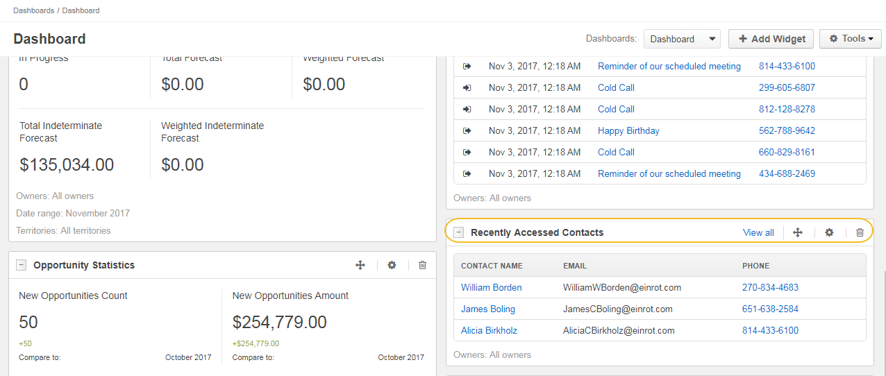

The Recently Accessed Contacts widget displays the list of recently accessed contacts.
Note
For how to add widgets to the dashboard and manage them, see the relevant topics:
You can adjust the following settings for the recently accessed contacts widget: